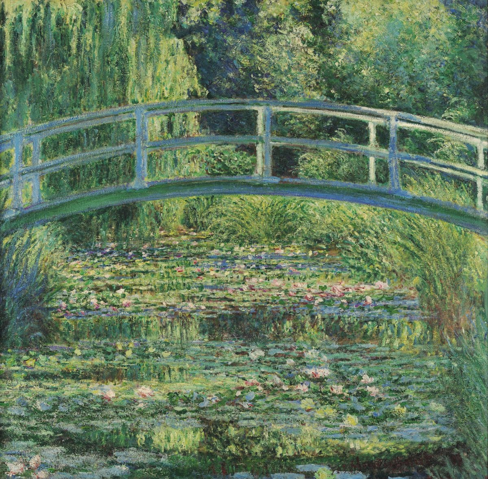
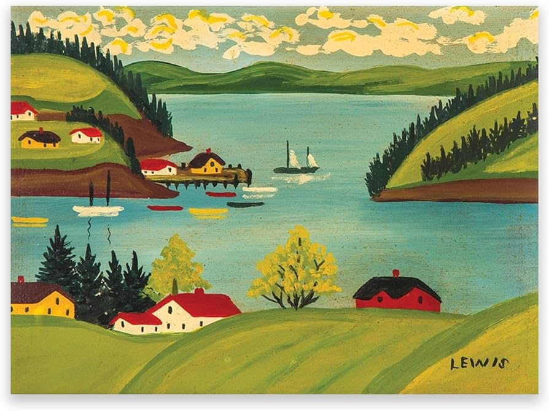
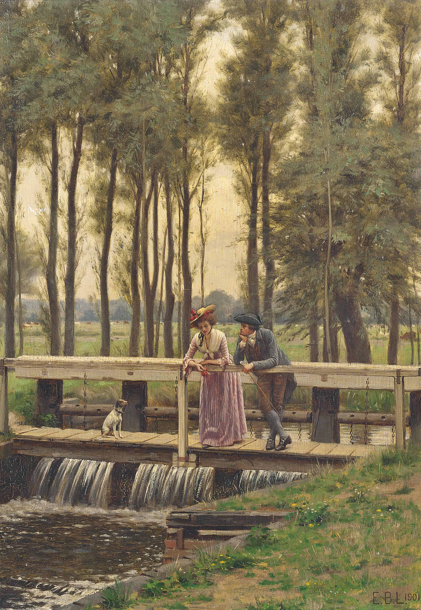
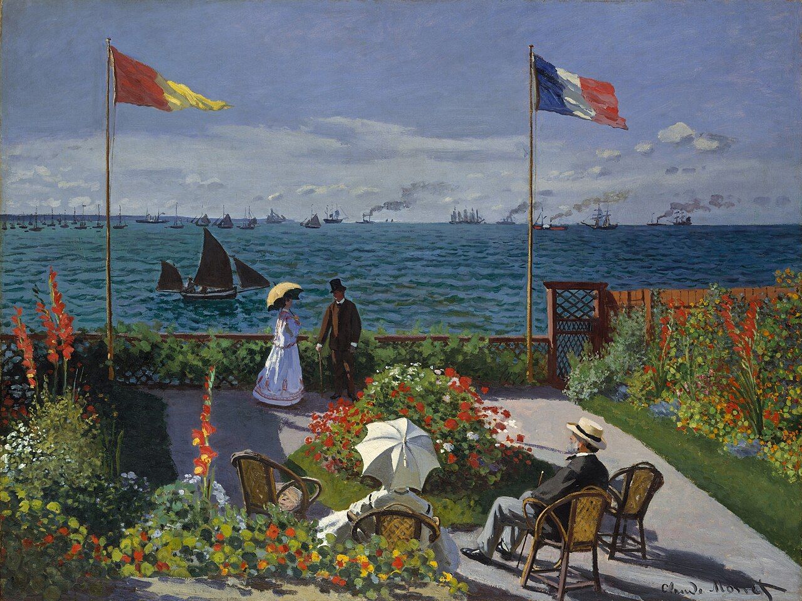

Boas vindas ao Museu em Pixel! Quem disse que você precisa viajar o mundo para entrar em um museu? Em um dia a dia tão corrido e digital, transformamos a sua tela em uma galeria viva. Aqui, a gente quebra as barreiras físicas para levar as maiores obras-primas da humanidade direto para as suas mãos, e o melhor: com explicações simples, diretas e sem enrolação. Cada pixel reconstrói uma história, conectando você ao passado de um jeito leve e dinâmico. Afinal, a arte não precisa ser intocável para ser incrível.

Uma Mulher Caminhando no Jardim é uma obra que se destaca pelo uso de cores vivas e pinceladas rápidas. A tela mostra uma figura feminina cercada pela natureza exuberante. O cenário transmite uma sensação de tranquilidade e isolamento. O contraste entre as cores das flores e o verde das folhas cria uma atmosfera vibrante, típica do estilo pós-impressionista que buscava expressar emoções através da paisagem.
Pintor: Vincent van Gogh | Data de produção: 1887

O Lago das Ninfeias é uma pintura do estilo impressionista que retrata a superfície tranquila de um lago coberto por ninfeias e cercado pela natureza. Claude Monet utiliza cores suaves, reflexos de luz e pinceladas delicadas para capturar a beleza do ambiente, transmitindo uma sensação de paz, contemplação e serenidade, como se o espectador estivesse imerso naquele momento calmo.
Pintor: Claude Monet | Data de produção: 1899

Uma Vista de Sandy Cove é uma pintura do estilo arte popular (folk art) que retrata uma paisagem costeira da região de Sandy Cove, com cores vibrantes e formas simples. Maud Lewis representa a beleza do local de maneira alegre e acolhedora, destacando a natureza e a vida cotidiana. A obra transmite uma sensação de felicidade, tranquilidade e admiração pela simplicidade do ambiente.
Pintora: Maud Lewis | Data de produção: cerca de 1956

A Leitora é uma pintura do estilo realista que mostra uma mulher concentrada na leitura, sentada em um ambiente tranquilo. Jean-Honoré Fragonard utiliza luz suave e detalhes delicados para criar uma atmosfera íntima e acolhedora. A obra transmite sensações de calma, introspecção e prazer silencioso da leitura, convidando o espectador a compartilhar daquele momento sereno.
Pintor: Jean-Honoré Fragonard | Data de produção: 1770–1772

The Trysting Place é uma obra de caráter romântico e influenciada pelo academicismo vitoriano, retratando um encontro marcado em um ambiente medieval idealizado. A composição delicada e a atenção aos detalhes criam uma atmosfera de expectativa e afeto, transmitindo sentimentos de romance, serenidade e nostalgia por tempos passados.
Pintor: Edmund Blair Leighton | Data de produção: 1901
 Café da Manhã no Jardim
Café da Manhã no Jardim
Café da Manhã no Jardim é uma obra do impressionismo que retrata um momento cotidiano ao ar livre, cercado pela tranquilidade de um jardim. As cores suaves e a luz natural valorizam a atmosfera íntima da cena, transmitindo sensações de harmonia, conforto e serenidade familiar.
Pintor: Giuseppe De Nittis | Data de produção: 1884

O Jardim de Sainte-AdresseO Jardim de Sainte-Adresse é uma obra do impressionismo que retrata um jardim à beira-mar organizado e sereno, com figuras contemplando a paisagem costeira. A composição equilibrada e a luz suave reforçam a sensação de calma, contemplação e prazer em um momento de descanso ao ar livre.
Pintor: Claude Monet | Data de produção: 1867
O Jardim de Luxemburgo é uma obra do início do modernismo/fauvismo que retrata um espaço público de Paris com cores vivas e pinceladas expressivas. A cena transmite leveza, liberdade e uma sensação de observação tranquila da vida cotidiana em meio à natureza urbana.
Pintor: Henri Matisse | Data de produção: 1901